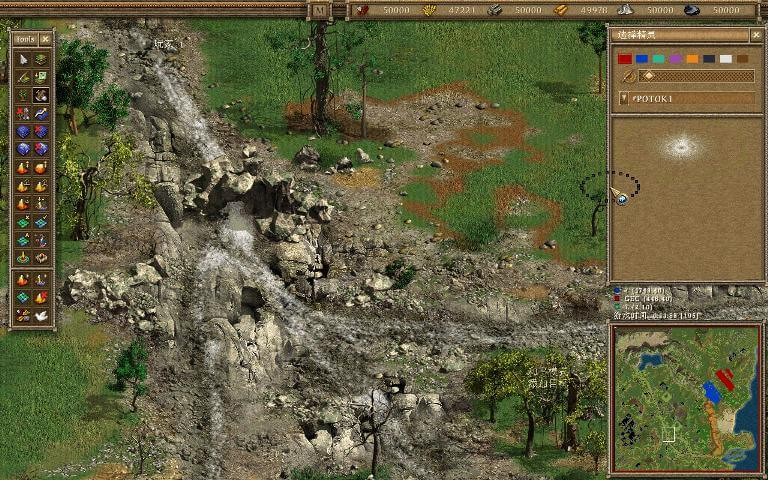
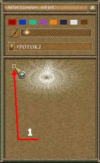

点击“F5”开启设置溪流和瀑布模式。

在屏幕右边的选项栏颜色（玩家）选择栏之下，是一个调节鼠标画笔半径滚动条。在滚动条下面，是一个下拉菜单，你可以在菜单栏选择5种不同的溪流或瀑布形式。选择一种溪流或瀑布之后，在选项栏下面会出现它的图片。在图片的周围，你可以看见一圈淡绿色的小方块，选择一个小方块，你就指定了小溪和瀑布的方向。将鼠标移动到地图上点击左键，你就能得到相应的小溪或者溪流。转动鼠标滑轮可以调整溪流的方向。

1、 选择一个设定方向的小方块。
你可以用编辑树或石头模式来修饰你的小溪或者瀑布，使其更加逼真。在清除树或石头模式中，你可以清除小溪或瀑布。
注意：这种方式放置的小溪不能行船，但是可以让可移动单位通过。